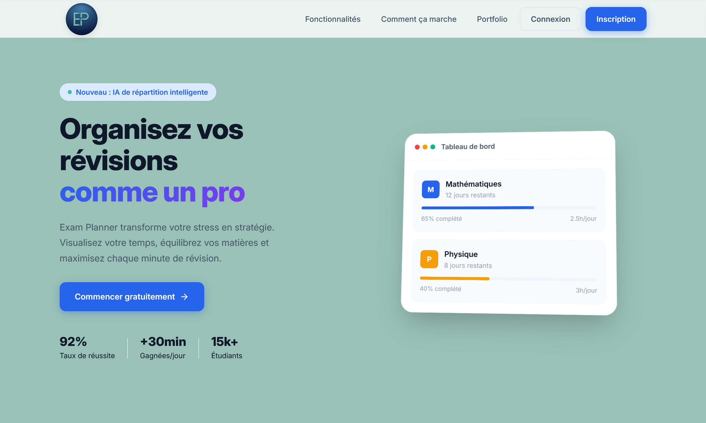
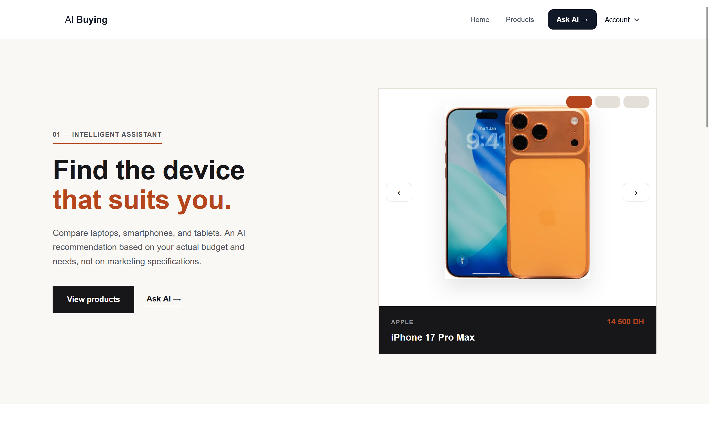
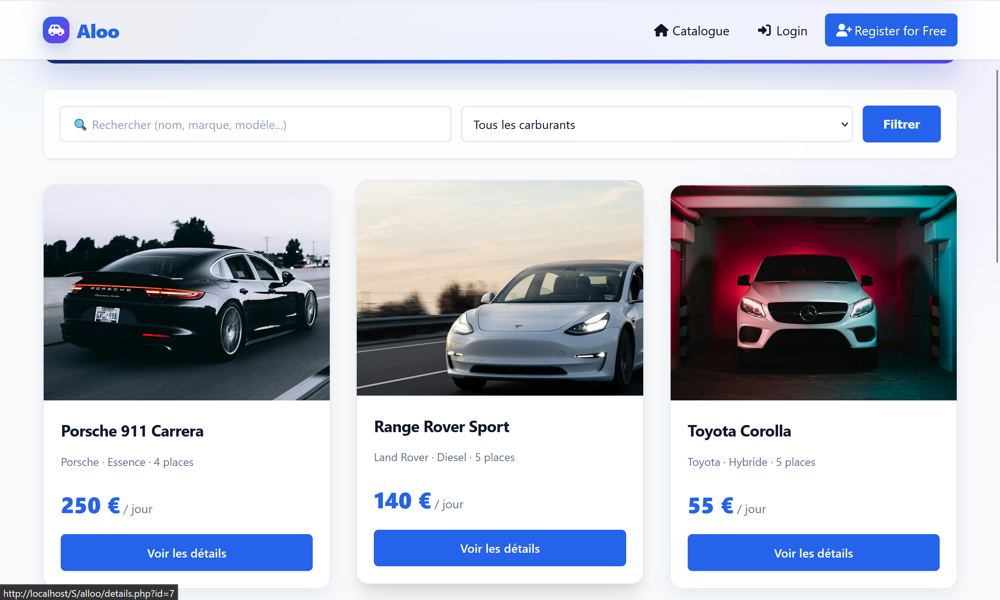

↗Exam Planner
Planifier ses révisions avec méthode : une application pour organiser modules et examens, puis générer un planning de travail personnalisé.
Je m'appelle Abdelkhalek Sadik, étudiant en deuxième année à l'EST de Safi. Je relie développement web, réseaux et automatisation pour transformer des problèmes concrets en outils simples.
De la logique du code à l'architecture des réseaux, j'aime comprendre comment les choses fonctionnent — puis les rendre plus efficaces.
Des projets personnels et académiques, conçus autour de besoins réels et de solutions concrètes.

↗Planifier ses révisions avec méthode : une application pour organiser modules et examens, puis générer un planning de travail personnalisé.

↗Un assistant qui comprend les besoins exprimés en langage naturel et aide à trouver le bon ordinateur ou smartphone.

↗Un outil pour organiser un parc partagé : véhicules, conducteurs, disponibilités, plannings et paiements au même endroit.
Code source ↗Une plateforme pour centraliser élèves, moniteurs, véhicules, plannings et paiements dans un seul espace de gestion.
Une application Android en Java qui va à l'essentiel : les opérations courantes dans une interface mobile claire.
Un site e-commerce conçu pour une cliente spécialisée dans les produits de beauté et de soin naturels.
J'apprends en construisant : chaque outil est une façon de mieux résoudre le problème.
Voir mon certificat CCNA ↗PHP · MySQL · JavaScript · HTML · CSS · C · Java
Réseaux · notions CCNA · Linux · Linux Server
Git · GitHub · Docker · n8n · API · IA générative
Une formation technique et un apprentissage guidé par la curiosité, les projets et la pratique.
Un premier goût pour le raisonnement logique et la résolution de problèmes.
Formation en programmation, réseaux et conception web. Obtention du certificat CCNA : Introduction to Networks.
Approfondissement du développement web, des bases de données, de l'automatisation et de l'IA appliquée.
Ouvert aux stages, aux collaborations et aux échanges autour du développement et de la technologie.
abdelkhaleks036@gmail.com ↗